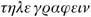

1. Fort Saint-Jean: The entrance to the old harbour at Marseille is guarded by two forts, the Fort Saint-Jean on the north and the Fort Saint-Nicholas on the south. The Pharo lies west of the Fort Saint-Nicholas, and Les Catalans south-west. In the standard text, some place-names are misspelt (‘Morgion’ for ‘Morgiou’, etc.). These have been corrected, to accord with Schopp (1993).
The new harbour was under construction, north of Fort Saint-Jean, at the time when the novel was published. The city rises away from the old harbour, or Vieux Port, forming – in the words of Murray’s Handbook for Travellers in France (London, 1847) ‘a basin or amphitheatre, terminating only with the encircling chain of hills. From this disposition of the ground, the port becomes the sewer of the city – the receptacle of all its filth, stagnating in a tideless sea and under a burning sun… The stench emanating from it at times is consequently intolerable, except for natives…’
On the whole, Marseille was not considered attractive for tourists, and Dumas’ novel did a good deal to enhance its image.
2. supercargo: On a merchant ship, the officer in charge of the cargo and of finances.
3. for Marshal Bertrand: Marshal Bertrand (1773–1844) was one of Napoleon’s marshals. He followed the emperor to exile on Elba.
4. the Italian proverb: chi ha compagno, ha padrone: ‘Whoever has a partner, has a master’.
1. a hundred louis: All sums of money have been left as in the original text. The louis was a gold coin worth 24 francs: the franc had become the standard unit of currency after 1795, divided into 100 centimes (or 10 décimes). However, a number of denominations continued in circulation, including the louis, the livre (equal to the franc), the écu and others.
Equivalents are hard to assess. The exchange rate, in the first half of the nineteenth century, was 25 francs to the pound sterling (so one louis was worth just under a pound). The fare by mail coach from Paris to Marseille, via Lyon, was around 145 francs, or nearly 6 pounds (though, as we see in Chapter CVI, Albert manages to do it for 114 francs, by using river transport for part of the journey). This may sound like a bargain to travellers on French Railways, but one must remember (as Coward points out in his edition of the 1846 translation) that a curé’s stipend was only 1,000 francs (£40) a year.
1. The Flood… water drink: A couplet from Louis-Philippe de Ségur’s Chanson morale.
2. crown prosecutor: There is no English equivalent to the office of procureur du roi, who was, broadly speaking, the officer responsible for investigating crimes and instituting criminal proceedings on behalf of the state. In the early nineteenth century, the procureur in Marseille was assisted by five deputies, or substituts.
3. Murat: Joachim Murat (1767–1815), one of Napoleon’s marshals.
1. commissioner of police: The commissaire de police was responsible for policing in a given administrative district.
1. a god: Napoleon Bonaparte (1769–1821) was an officer in the pre-revolutionary army, commissioned lieutenant in 1785. After the abolition of the Bourbon monarchy and the execution of King Louis XVI in 1793, he had a spectacular career in the revolutionary army, becoming a general by the age of twenty-seven and leading the French armies in Egypt in 1798. In the following year, he organized the coup d’état that made him First Consul, then Consul for life (1802) and finally Emperor (1804).
To some, Napoleon’s foreign conquests and grandiose style seemed to herald a new era of glory for France; to others, including some in the countries annexed to France, he appeared to be carrying forward the revolutionary ideals of liberty and equality; to French liberals, he appeared an increasingly autocratic tyrant; and by monarchists, of whatever country, he was seen as merely an upstart and a usurper. His disastrous Russian campaign (1812) led ultimately to his abdication in April 1814 and his exile on the Mediterranean island of Elba, where he was allowed to retain his title of Emperor and sovereignty over its inhabitants. Meanwhile the Bourbon king, Louis XVIII, was restored to the throne.
In March 1815 (the time when the novel begins), Napoleon escaped from Elba. The army rallied to him, the king fled and the empire was restored for the brief period known as the Hundred Days, which ended (18 June 1815) with the victory of the allied coalition at Waterloo. Napoleon again abdicated and was exiled to the Atlantic outpost of St Helena.
Louis XVIII regained his throne and was succeeded on his death (1824) by his brother, Charles X. This undistinguished Second Restoration ended in 1830 with the July Revolution, which installed another branch of the royal family, under King Louis-Philippe. Most of those who lived through this period found it stale and inglorious after the excitements of the Revolution and the victories of the empire, and its writers (Stendhal, Musset, Vigny, Lamartine, Hugo) reflect this sense of disillusionment in various ways. In fact, the Restoration was a time of considerable intellectual ferment, from the realm of academic, scientific and historical enquiry to the expansion of the periodical press, theatres and other forms of popular entertainment, and the ideological battles over Romanticism in literature and the arts.
2. Joséphine: Joséphine de Beauharnais (1763–1814), Napoleon’s first wife, whom he divorced in 1809 because she could not bear him an heir.
3. the Cross of Saint Louis: Under the royalist regime, the state decoration equivalent to the orders of the Legion of Honour (which Napoleon instituted in 1802).
4. the exile of Hartwell: Louis XVIII, as Count of Provence, lived at Hartwell in Buckinghamshire from 1809 to 1814. Dumas portrays him (in the next chapter) as a pedantic classical scholar, incapable of managing his country’s affairs.
5. the 9th Thermidor and the 4th April 1814: The first of these dates, given according to the republican calendar which replaced the Christian calendar in France from 1703 to 1806, was the day on which Robespierre fell; the second was that of Napoleon’s abdication. To a monarchist, both would have been happy events.
6. a Girondin: A member of the moderate party under the Revolution, which was opposed to the Terror and was overthrown by Robespierre in June 1793. This seems to be an error by Dumas: elsewhere, it is made clear that Noirtier is a member of the more extreme sect, the Jacobins.
7. two thousand leagues: Approximately 8,000 kilometres. A league is about 4 kilometres (or 2½ miles).
8. the poor Duc d’Enghien: Louis-Antoine-Henri de Bourbon, Duc d’Enghien (1772–1804), went into exile at the time of the Revolution and lived in Germany as one of the leaders of the anti-revolutionary armies. In 1804 he was kidnapped (almost certainly on Napoleon’s order and in contravention of international law), tried in Vincennes on a charge of conspiracy, and shot. He became a martyr of the opposition to Napoleon.
9. Aesculapius: Roman god of healing and medicine.
1. carbonari: Members of a secret society formed to combat the annexation of northern Italy by France under Napoleon and, later, to struggle for freedom from Austria. A meeting (of twenty members) was called a vente.
1. the Château d’If: The island fortress, made famous by Dumas’ novel, had in reality only one notorious prisoner, the Comte de Mirabeau, who was sent there under the Royalist regime for debt.
2. the abbé: Originally (like the English ‘abbot’) this meant the head of a monastery; but after the Middle Ages it came to be used of any ecclesiastic, usually one who had not taken priestly vows.
1. the fatal stamp of which Virgil speaks: Virgil, Aeneid, IV, ll. 70–74, referring to a deer wounded by a hunter’s arrow.
2. Hoffmann: Ernst Theodor Amadeus Hoffmann (1776–1822), German author and composer, the writer of a series of fantastic tales which greatly influenced the Romantic movement (and inspired Offenbach’s opera, Tales of Hoffmann).
1. Louis-Philippe: Louis-Philippe, Duc d’Orléans (1773–1850), became king after the Revolution of July 1830 (see note 1 to Chapter VI).
2. Gryphius: An edition of Horace’s poems published in Lyons in 1540. The details are supposed to reinforce the idea of Louis as a pedantic old man, more interested in his books than in affairs of state.
3. ‘Canimus surdis’: ‘We sing for the deaf’. A misquotation of Virgil, Eclogues, X, 8: ‘We do not sing for the deaf’.
4. Pastor quum trahiret: ‘As the shepherd was hurrying’; Horace, Odes, I, 15, line 1. This refers to Paris’ abduction of Helen, Paris having been brought up by shepherds.
5. ‘Mala ducis avi domum’: ‘Under evil auspices you are leading home’; Horace, Odes, I, 15, line 5. Again, this refers to Paris carrying Helen off to Troy (her abduction being the cause of the Trojan War).
6. bella, horrida bella: ‘Wars, frightful wars’; Virgil, Aeneid, IV, line 86. Like the previous quotations, this is an indirect comment on the political situation and the threat of war, perhaps suggesting that Louis has a better understanding of events than it appears.
7. prurigo: Various types of skin disease, characterized by intense itching, are known under this name.
8. two Virgilian shepherds: Some of the Eclogues (or Bucolics), Virgil’s pastoral poems, are written as dialogues between shepherds (e.g. the first, fifth, seventh, eighth and ninth), with the speakers responding to one another in carefully balanced passages.
9. grognards: ‘Grumblers’, ‘gripers’, ‘grousers’; the name given to the loyal old guard of Napoleon’s army.
10. Molli fugiens anhelitu: ‘Thou shalt flee, panting and weak’; Horace, Odes, I, 15, line 31. Nereus is prophesying that Paris will flee from the Greek hero Diomedes.
11. ‘Justum et tenacem propositi virum’: ‘The man who is firm and just in his intentions’, Horace, Odes, III, 3, line 1.
1. Arcole, Marengo and Austerlitz: Battles in which Napoleon defeated the successive coalitions against him.
1. the Hundred Days: See note 1 to Chapter VI.
1. one of Marcellus’ soldiers: The geometer Archimedes directed the defence of his native city of Syracuse against the Romans, led by Marcellus. When Syracuse fell (212 BC), ‘the Roman general gave strict orders to his soldiers not to hurt Archimedes, and even offered a reward to him who brought him alive and safe into his presence. All these precautions were useless: he was so deeply engaged in solving a problem, that he was even ignorant that the soldiers were in possession of the town; and a soldier, without knowing who he was, killed him…’ (Lemprière, Classical Dictionary, 1828).
2. Abbé Faria: In creating this fictional character, Dumas has drawn on the personality of a real Portuguese cleric, José-Custodio de Faria (1756–1819), an eccentric figure in Parisian society in the early years of the century because of his experiments with hypnotism and magnetism. A student of Swedenborg and Mesmer, he lectured on hypnotism in Paris from 1813 onwards.
1. Martin’s Babylonian scenes: The English artist John Martin (1789–1854) specialized in vast and spectacular canvases of biblical subjects, including The Fall of Babylon (1819). They were well known from lithographs.
2. Ugolino: Dante’s Inferno, XXXII, 124–9. Count Ugolino Della Gherardesca was the leader of the Guelph (pro-papal) faction in Pisa, but fell victim to a conspiracy led by Archbishop Ruggieri. In 1289, with his sons and grandsons, he was walled up in the Torre della Fame in the Piazza dei Cavalieri where, according to Dante, he resorted to cannibalism and as a punishment was condemned for eternity to gnaw at Ruggieri’s skull.
3. Belshazzar’s feast: Interrupted by a mysterious hand, writing the three fateful words on the wall, which the prophet Daniel interpreted as meaning the end of Belshazzar’s reign as King of Babylon. See Daniel 5. The feast was another of John Martin’s subjects, in a painting of 1821 (see note 1).
1. Duc de Beaufort… Latude from the Bastille: Dumas used the escape of the Duc de Beaufort from Vincennes (1643) in his novel Twenty Years After. Abbé Dubuquoi escaped from the Bastille after being imprisoned in 1706, and Jean-Henri Latude twice escaped from the prison at Vincennes, after being arrested in 1749 for sending a box of powder to Madame de Pompadour, but was recaptured and spent a total of thirty-five years in prison. On his release, he wrote his memoirs, which made him famous.
2. Lavoisier… Cabanis: Antoine-Laurent Lavoisier (1743–94) was a celebrated chemist. The physician Pierre-Jean-Georges Cabanis (1757–1808) influenced a number of writers, including Stendhal, with his theories on the nature of human psychology.
1. lead us to wrongdoing: Dumas shows Faria as essentially a follower of Jean-Jacques Rousseau (1712–78), who believed that human beings are born free and virtuous, but are corrupted by society.
2. Descartes: The philosopher René Descartes (1596–1650), who developed a pre-Newtonian theory of physics based on vortices of material particles, an extension of the atomic theories found in classical writers from Epicurus to Lucretius.
1. Cardinal Spada: Cesare Spada, who purchased his cardinal’s hat from Pope Alexander IV, was poisoned with his nephew Guido by the pope in 1498. The sinister byways of Italian history held a peculiar fascination for French writers at the start of the nineteenth century, particularly for liberals who saw political capital to be made out of relating past papal misdeeds. But there is more to it than that: Stendhal, who tells similar stories in his Chroniques italiennes and Promenades dans Rome, admired the mixture of refinement and savagery that he perceived in Italian culture, and was fascinated by its reversals of expectations (noble bandits, degenerate nobles). The Italian scenes in Dumas’ novel are an interesting reflection of the image of Italy in his time and suggest the appeal of a country that French visitors often found liberating after Restoration France.
1. alguazils: Policemen, constables.
2. a Genoese tartan: A small, single-masted boat.
3. Phrygian cap: The red cap, a symbol of liberty during the Revolution, was modelled on the Phrygian cap worn by freed slaves in antiquity.
1. Doctor Pangloss: The optimistic philosopher in Voltaire’s novel Candide, ridiculed because of his belief that we live in ‘the best of all possible worlds’ – and consequently that progress is impossible.
1. this other Pelion: A mountain in Thessaly which the giants, in their war against the gods, heaped up on Mount Ossa so that they could scale the heavens more easily.
1. Alaric: Visigoth king (d. 410), who died after sacking Rome. To ensure that his grave would not be violated, it was placed in the course of the River Busento and the slaves who had dug it were executed.
1. a double napoléon: A gold coin worth 40 francs.
1. ferrade… tarasque: Provençal festivities. The ferrade, held in Arles, Nîmes and the Camargue, marked the branding of horses and cattle. The tarasque is a monster which reputedly emerged from the Rhône at Tarascon and devoured children, until subdued by St Marthe. The ceremonies associated with it, held at Whitsun, were described by Dumas in his book, Le Midi de la France (1841).
2. the Second Restoration: That of 1815. See note 1 to Chapter VI.
1. the war in Spain: In 1822 France intervened in support of the autocratic King Ferdinand against the Spanish constitutionalists.
2. the capture of the Trocadero: On 7 April 1823, French forces under the Duc d’Angoulême captured the fort from the constitutionalists.
3. Ali Pasha: Ali Pasha, ‘the Lion’ (1741–1822), was a brigand who rose to power in Greece and Albania, being made pasha of various provinces in the Ottoman Empire, including (in 1788) Janina. He attracted support from both France and Britain, who saw him as a relatively enlightened ruler. In 1820, Sultan Mahmud II turned against him and, though he was promised safe conduct if he surrendered, he was put to death in 1822.
The fame of Ali Pasha was propagated notably by Victor Hugo, in his early collection of poems, Les Orientales (1829). In the preface to the first edition he writes that ‘Asian barbarism’ cannot be so lacking in great men as civilized Europe would like to imagine: ‘One must remember that it [i.e. Asia] has produced the only colossus that this century can offer who will measure up to [Napoleon] Bonaparte, if anyone can be said to do so: this man of genius, in truth a Turk and a Tartar, is Ali Pasha, who is to Napoleon as the tiger to the lion or the vulture to the eagle’ (see Preface, p. xi).
4. ‘Frailty, thy name is woman’: Shakespeare, Hamlet, I, 2.
1. Montredon: Either La Madrague-de-Montredon, east of Marseille, or possibly Montredon-Labessonie, in south-west France, which was dusty because of its sawmills.
1. Signor Pastrini: Pastrini, proprietor of the Hôtel de Londres in the Piazza di Spagna, is a historical personage, mentioned by Dumas in Le Speronare (1842). Dumas stayed at his hotel in 1835 and records that rooms there cost between 2 and 20 francs.
2. Algiers: Using as its excuse the long history of piracy from the port, France sent an expedition which in 1830 captured Algiers and exiled the bey to Naples. It marked the start of the French colonial empire in Africa and a love–hate relationship with Arab North Africa that was to last for the next 130 years. But in the early nineteenth century the conquest would not have posed any moral dilemma, even for a liberal like Dumas. It is clear from the novel that he sees Algeria as an outlet for France’s youthful energies after the end of the Napoleonic empire.
3. Adamastor: A giant who guarded the Cape of Good Hope, invented by the Portuguese poet Camöes in his epic, The Lusiads (V, 39–40).
4. Bourgeois Gentilhomme: A reference to Molière’s play, Le Bourgeois gentilhomme (IV, 3), where the central character, Monsieur Jourdain, is amazed when confronted by a man, supposed to be a Turk, who says the words ‘bel-men’, which are interpreted as meaning: ‘You must go with him to prepare for the ceremony and then see your daughter and conclude her marriage.’ ‘What!’ Jourdain exclaims. ‘All that in two words!’
5. The Huguenots: An opera, with music by Meyerbeer and libretto by Eugène Scribe and Emile Deschamps (1836).
6. yataghan: A Turkish sword.
7. Appert: Benjamin-Nicholas-Marie Appert (1797–?), whom Dumas had known in the early 1820s, when both were employed by the Duc d’Orléans, and a philanthropist who devoted himself to aiding convicts; not the now better-known Nicholas Appert (1750–1841), inventor of a process for preserving food. The man in the blue cloak is Edmé Champion (1764–1852), a diamond merchant who devoted his later years to relief of the poor.
1. moccoletti: Little candles.
2. affettatore: Rogue, swindler.
3. Corneille’s ‘Qu’il morût…’: In Pierre Corneille’s play Horace (III, 4), where the hero’s old father says unhesitatingly that his son should have died rather than (as he believes) sacrifice his honour – in the event, the younger Horace turns out to have had a cleverer plan than his father gave him credit for.
4. Florian: Jean-Pierre Claris de Florian (1755–94), the author of sentimental romances.
5. Léopold Robert or Schnetz: Both the Swiss artist Léopold Robert (1794–1835) and the French painter Jean-Victor Schnetz (1787–1870) were pupils of David and painted scenes of the Roman countryside.
6. Avernus: The entry to Hell, according to Virgil (see Aeneid, VI, line 126).
1. Martial: Roman poet (c. AD 40–104), famous for his epigrams. The reference here is to his De Spectaculis: his praise of the Colosseum was well rewarded by the Emperors Titus and Domitian.
2. Parisina: From a poem by Byron, with music by Gaetano Donizetti (1797–1848), who was also the composer of Lucia di Lammermoor, from Scott’s novel, The Bride of Lammermoor. Parisina (1833) tells of the love of Parisina (sung by La Spech) for Ugo (Napoleone Moriani), the illegitimate son of her husband, Azzo (Domenico Coselli). Dumas met Coselli in Naples in 1835.
3. Countess G—: It is clear from the manuscript that Dumas is thinking of Byron’s mistress, Countess Teresa Guiccioli.
4. Lord Ruthwen: The short novel, Lord Ruthwen, or The Vampire (first published in 1819 in the New Monthly Magazine), was written by Byron’s companion and physician, Dr Polidori, who did not discourage the attribution to the poet himself. It was soon translated into French by Henri Faber (1819) and again by Amédée Pichot (1820), and helped to fuel an extraordinary vogue for vampire stories and melodramas, including Cyprien Bérard’s Lord Rutwen, and the melodrama Le Vampire (1820), co-authored by Charles Nodier. Dumas saw this in 1823 and devoted several chapters to it in his memoirs (3rd series, 1863).
Nodier’s play was promptly re-translated into English by James Planché, as The Vampire, or The Bride of the Isles (1820), and before the end of the same year in France there had been at least five other vampire productions on the Parisian stage: a burlesque, a farce, a comic opera, a vampire Punch and a ‘vaudeville folly’ in which one character says: ‘Vampires! They come from England… That’s another nice present those gentlemen have sent us!’ Nodier observed that ‘the myth of the vampire is perhaps the most universal of our superstitions’. It revived, of course, with Bram Stoker’s Dracula (1899); and lives on in our own century in a medium which might be said to feature only the shadowy figures of the Undead – the cinema.
5. the Do-Nothing Kings: ‘Les Rois Fainéants’, the name given to a succession of minors in the Merovingian dynasty, during the seventh and eighth centuries, who ruled through regents.
6. guzla: A Balkan musical instrument, like a violin with only one or two strings. The writer Prosper Mérimée (1803–70) published a collection of supposedly Illyrian songs, La Guzla (1827), under the pseudonym Hyacinthe Maglanowich, both as a satire and as a tribute to the vogue for the East and its folklore.
1. Comte de Chalais: Chalais was beheaded in 1626 for plotting against Cardinal Richelieu. The execution was carried out, very inexpertly, by another condemned man.
2. Castaing: The poisoner Dr Edmé-Samuel Castaing was executed in 1823; Dumas attended the trial (and may have used some details of the evidence in Chapter LII), but he did not watch the execution. In fact, neither did Albert, since, according to the internal evidence of the book, he would only have been six years old at the time (and not, as he claims here, leaving college).
1. Callot: Jacques Callot (1592–1635), painter and engraver.
2. The Bear and the Pasha: The actor Jacques-Charles Odry (1779–1853) played the role of Marécot in Scribe’s vaudeville The Bear and the Pasha (1820).
3. L’Italiana in Algeri: Rossini’s opera, first performed in 1813.
4. Didier or Antony: Didier is the hero of Victor Hugo’s Marion Delorme, which was first performed in 1831, at the same theatre as Dumas’ own play Antony. Though Dumas himself defended Hugo against the charge, Hugo was accused by some of imitating Dumas’ play, since both central characters are characteristic examples of the doomed Romantic hero.
5. Gregory XVI: Pope from 1831 to 1846. Dumas was granted an audience with him in 1835 and (as this passage and his account elsewhere show) was favourably impressed.
6. Manfred… Lara’s head-dress: Manfred and Lara are two of the most Romantic figures in Byron’s work.
7. forty at least: Dumas is sometimes inaccurate about dates, and also deliberately vague about the count’s age. In fact, on the evidence of the novel, Monte Cristo was born in 1796. It is now 1838, so he is forty-two.
8. Aeolus: God of storms and winds.
1. Aguado… Rothschild: Alejandro-Maria Aguado, Marquis of Las Marimas del Guadalquivir (1784–1842), was a Spanish financier who opened a bank in Paris in 1815. The French branch of the Rothschild family was founded by James de Rothschild, but Dumas might be thinking of Charles de Rothschild (1788–1855), whom he had met.
2. Colomba: A novel by Prosper Mérimée, the author of Carmen and one of the writers who had done most to popularize Spanish and Corsican subjects, in which the local colour is provided mainly by the characters’ fierce courage and sense of honour. Colomba was not published until 1840, so Morcerf’s reference to it in 1838 is an anachronism.
3. Prix Montyon: A prize for virtuous conduct awarded by the Institut de France.
1. Grisier, Cooks, and Charles Leboucher: Auguste-Edmé Grisier ran a fencing school; Dumas wrote the preface to his Les Armes et le duel (1847). Cooks had a gymnasium, and Leboucher was a boxing master.
2. Don Carlos of Spain: Claimant to the Spanish throne, on the death of his brother, Ferdinand VII, in 1833. He and his followers (the Carlists) fought against Isabella II but were defeated; Carlos fled to France in 1839 and was interned in Bourges. In 1844 he renounced his own claim in favour of his son and spent the remaining eleven years of his life in Austria.
3. Béranger: Pierre-Jean de Béranger (1780–1857) was the author of light-hearted and mildly satirical songs and verses, who succeeded in upsetting the Restoration government. The phrase Lucien has just used is taken from his Chansons.
4. Constantine: The Algerian city was captured in 1837, after an unsuccessful attempt in the previous year.
5. yataghan: See note 6 to Chapter XXXI.
6. Klagmann… Marochetti: Jean-Baptiste-Jules Klagmann (1810–67) was a sculptor who helped Dumas to decorate his Théâtre Français in 1846–7. Charles Marochetti (1805–62) was a well-known sculptor.
7. Prix Montyon: See note 3 to Chapter XXXVIII.
8. Mehmet Ali: Mehmet Ali (1769–1849), an Albanian officer, was sent to Egypt to oppose the French in 1798 and was later made viceroy. His rebellion against the Turks during the 1830s was supported by France but not by Britain.
9. the Casauba: The Casbah, a fortified citadel.
10. ‘Punctuality… sovereigns claimed’: The remark is attributed to Louis XVIII.
1. eighty-five départements: The administrative districts into which France was divided after 1790. To begin with there were eighty-three, later increased by the addition of Corsica and three départements in Algeria. By the late twentieth century, after various administrative reorganizations and the loss of Algeria and other former colonies, the number stood at ninety-six in Metropolitan France and five overseas départements (Martinique, Guyane, Guadeloupe, Réunion and St Pierre-et-Miquelon).
1. Dupré… Delacroix… vanished with earlier centuries: Apart from Eugène Delacroix (1798–1863), these artists are now largely forgotten. However, most were friends or acquaintances of Dumas, so the list is intended to demonstrate Morcerf’s good taste in his choice of contemporary art.
2. Léopold Robert: See note 5 to Chapter XXXIII. Incidentally, according to the internal chronology of the novel, Mercédès would have been thirty-two, not ‘twenty-five or twenty-six’ in 1830, when Albert says the portrait was made.
3. Gros: Jean-Antoine Gros (1771–1835), also a pupil of David, specialized in historical and battle scenes.
4. d’Hozier and Jaucourt: Two genealogists known for their encyclopedic learning and erudite industry. Pierre d’Hozier (1592–1660) wrote a genealogy of leading French families in 150 volumes, which was continued by his son and grand-nephew. Louis de Jaucourt (1704–79) wrote on genealogy for the Encyclopédie.
1. ‘I was almost made to wait’: Louis XIV’s famous rebuff to a courtier who arrived insufficiently early.
1. the Hundred Days: See note 1 to Chapter VI.
1. Albano and Fattore: The Italian painters Francesco Albano (1488–1528) and Giovanni Francesco Penni, known as ‘Il Fattore’ (1578–1660).
2. Thorwaldsen, Bartolini, or Canova: Neo-classical artists, who were not in favour with the Romantics: Bertel Thorwaldsen (1768–1844) was Danish, Lorenzo Bartolini (1777–1850) and Antonio Canova (1757–1822) were Italians.
1. Antiquity – as interpreted by the Directoire: The Directoire was the regime in power from 1795 to 1799, in which executive power was exercised by a five-member ‘directorate’, elected by the legislature. As a whole the revolutionary period saw a succession of attempts to discover aesthetic styles appropriate to a non-monarchical regime, usually by adapting motifs from republican Greece or Rome. Like the Neo-classicism of Thorwaldsen and Canova, this had gone out of fashion by the 1830s, and Danglars’ enjoyment of it is a sign of his lack of taste.
2. Rousseau: The philosopher Jean-Jacques Rousseau (1712–78) was the author of an enormously influential treatise on education, Emile (1762). He recommended a method that both relied on the influence of nature and required a fairly strict regime. He would not have approved of Madame de Villefort’s mollycoddling of her obnoxious son.
3. Ranelagh: A public dance-hall, opened in 1774.
1. the senior or junior branch of the royal family: The Bourbon dynasty reigned in France up to the Revolution and was the branch of the royal family restored in 1815. The younger princes of the royal blood had been Dukes of Orléans since the fourteenth century and, under the Revolution, one of these, Louis-Philippe-Joseph, known as Philippe-Egalité, supported the revolutionary cause. Philippe-Egalité died on the scaffold in 1793, but his son, also Louis-Philippe, remained a supporter of a moderate, liberal monarchy. At the Revolution of July 1830, the Bourbon king, Charles X, abdicated in his favour, and Louis-Philippe’s accession was greeted as heralding a new, constitutional monarchy (though, in the event, these expectations were disappointed). It is to this junior, Orléanist branch that the present pretenders to the French throne belong.
2. Harlay… Molé: Two leading magistrates and presidents of the Paris parlement in the early seventeenth century.
3. four revolutions: Villefort was born just before the Revolution of 1789, so he had lived through the revolutionary period, the Napoleonic Empire, the Restoration and the July Revolution of 1830. It is not clear whether Dumas counts the Napoleonic coup of 1799 as a ‘revolution’ or whether he means the First Restoration (1814) and the Second Restoration (1815) to be counted separately. The implication is clear: that Villefort has managed to benefit from every change of government.
4. pede claudo: The full phrase is pede poena claudo; ‘punishment comes limping’, Horace, Odes, III, 2. That is: retribution will come slowly but surely – a good motto for Monte Cristo.
5. Tobias: See Tobit 7:15, where the angel reveals himself.
6. non bis in idem: The principle that a person cannot be tried twice for the same offence.
7. carbonaro: See note I to Chapter VII.
1. say tu to me: Every European language except English (in which ‘thee’ and ‘thou’ have long been archaic except in some dialects) has kept the second person singular for use with intimates, close friends and relatives. English translations usually try to get round this in some way: ‘ “Why do you address me so coldly – so distantly?” ’ is the version given in the 1852 translation, but it makes very little sense here, because Monte Cristo has said only three words (four in the translation) since entering the room, which is frankly not enough to provide grounds for her accusation. The point is that one of the three words is the formal, second person plural, vous.
1. Presse… Débats: La Presse, founded in 1836 by Emile de Girardin, was a liberal, popular newspaper, to which Dumas contributed. Le Journal des Débats (1789–1944) is one of the great newspapers in the history of French nineteenth-century journalism. The Count of Monte Cristo first appeared in it in serial form.
1. aristocracy of the lance… nobility of the cannon: That is to say, the pre-revolutionary aristocracy and those ennobled under Napoleon because of their service to the empire.
1. Mithridates, rex Ponticus: Mithridates VII (123–63 BC), King of Pontus in Asia Minor, who fought to defend his kingdom against the Romans, ‘fortified his constitution by drinking antidotes against the poison with which his enemies at court attempted to destroy him’ (Lemprière, Classical Dictionary). However, Monte Cristo is wrong in attributing this information to the historian Cornelius Nepos.
2. Flamel, Fontana or Cabanis: Nicholas Flamel (1330–1418) was reputed to be an alchemist. Félix Fontana (1730–1805) studied poisons and the doctor Pierre-Jean-Georges Cabanis (1757–1808) gave the philosopher Condorcet the poison he used to escape the guillotine in 1794.
3. Galland: Antoine Galland (1646–1715) made a celebrated translation of The Thousand and One Nights (1704–11).
4. Desrues: Antoine Desrues (1734–77), a famous poisoner. A. Arnould told his story in the series of Crimes célèbres (1839–40), to which Dumas contributed.
5. Borgias… Baron de Trenk: Famous poisoners, spies or adventurers. The Italian perfumer René was accused of poisoning the Prince de Condé; he and Ruggieri were agents of Catherine de’ Medici, and both feature in historical novels by Dumas. Friedrich von der Trenck was guillotined as an Austrian spy in 1794.
6. Magendie… Flourens: François Magendi (1783–1855) and Marie-Jean-Pierre Flourens (1794–1867) were, respectively, a well-known anatomist and a well-known doctor.
7. that paradox of Jean-Jacques Rousseau: Rastignac, in Balzac’s novel Le Père Goriot (Chapter II), puts the question: ‘What would you do if you could become rich by killing an old mandarin in China, by the sole force of your will, without leaving Paris?’ He wrongly attributes the idea to Rousseau.
1. Mlles Noblet, Julia and Leroux: Three dancers who performed the ‘Ballet des Nonnes’ in Jacques Meyerbeer’s opera Robert le Diable (1831).
2. Ali Tebelin: See note 3 to Chapter XXVII.
1. Danaro e… della Metà: Dumas translates, in a note: ‘Money and sanctity – half of the half’ – in other words, both lend themselves to exaggeration.
2. Henri IV… Pont Neuf: A reference to King Henri IV’s affair with his mistress, Gabrielle d’Estrées. The reason the king did not leave the Pont Neuf is that his statue stands at one end of the bridge.
3. Dante… d’Hozier: The genealogist (see note 4 to Chapter XLI). Dante acted as genealogist to the Cavalcantis by including Cavalcante Cavalcanti, father of his friend Guido, in Book X of the Inferno, ll. 52–72.
1. Antony: Another reference to Dumas’ play, in which the central character (II, 5) boasts of being a bastard.
1. eventually revert to her son: It was not unheard of for girls to be put into convents in order to concentrate the family wealth; above all, this discussion illustrates how few options a girl in Valentine’s position could have, despite her apparent wealth and privilege, and how powerless she is to decide her future. It also throws a new light on the behaviour of Eugénie Danglars, the unfeminine counterpart to Valentine (the latter being presented as the ideal, submissive, caring, modest, timid, selfless young woman).
1. the Montagne: The name given to the radical, Jacobin group in the revolutionary Convention.
2. A telegraph: The telegraph, introduced in 1793 and using a form of semaphore, was considered one of the great inventions of the age; by the 1840s there were over 3,000 miles of communication lines, all belonging to the War Department. It was superseded in 1845 by the electric telegraph, using Morse Code.
3. : Tele graphein; ‘distance writing’. Montalivet was Minister of the Interior from 1837 to 1839, succeeded by Duchâtel.
1. Delacroix: See note 1 to Chapter XLI.
1. like Vatel at Chantilly: Vatel was chef to the Prince de Condé, and committed suicide in 1671 because, one fast day when the prince was playing host to the king, the fish for dinner failed to arrive.
1. cupitor impossibilium: ‘One who desires the impossible’. In fact, what Tacitus says of Nero (Annals, XV, 42) is cupitor incredibilium – ‘one who desires the incredible’.
2. the Marquise de Ganges… Desdemona: The Marquise de Ganges was assassinated in 1667 by her two brothers-in-law; another of Dumas’ Crimes célèbres. Desdemona was strangled by Othello (Othello, V, 2).
3. Ugolino’s tower: For Ugolino, see Chapter XV, note 2. The poet Torquato Tasso spent seven years in prison, after a bout of madness. Francesca da Rimini married Giovanni Malatesta, but fell in love with her husband’s younger brother, Paolo. Giovanni ran them through with a single thrust of his sword. They figure among those tossed on the winds of passion in a celebrated passage in Dante’s Inferno (Canto V).
4. Lucina: Goddess of childbirth.
1. nil admirari: ‘Not to be impressed by anything’. See Horace, Epistles, I, 6.
2. Bossuet: Jacques-Bénigne Bossuet (1627–1704), an eminent orator and theologian.
3. Number one hundred and six: In Chapter LXXXII, however, Caderousse says that his number was 58 and Andrea’s 59.
1. like Nathan in Athalie: In Racine’s tragedy (III, 5), the character shows his inner turmoil by his inability to find the way out. Debray’s actions, bumping into the wall, are not in Racine’s text and must reflect a memory of the play in performance.
2. Don Carlos: See note 2 to Chapter XXXIX.
1. fat cows… lean cows: See Pharaoh’s dream in Genesis 41.
2. Jupiter… mixing species: The Roman god ‘became a Proteus to gratify his passions. He introduced himself to Danae in a shower of gold, he corrupted Antiope in the form of a satyr and Leda in the form of a swan. He became a bull to seduce Europa, and he enjoyed the company of Aegina in the form of a flame of fire. He assumed the habit of Diana to corrupt Callisto, and became Amphitryon to gain the affections of Alcmena…’ (Lemprière, Classical Dictionary).
1. Queen Mab… Titania: See Shakespeare, A Midsummer Night’s Dream and Romeo and Juliet (I, 4).
1. Homer… Belisarius: The engravings of works by Gérard and Morel both in fact represent the Byzantine general, Belisarius.
2. Battle of Navarino… King Otto: The Greek war of independence against the Turks began in 1821. It was supported by Britain, France and Russia, who defeated the Egyptian and Turkish fleets at the Battle of Navarino (1827). In 1832, Frederick of Bavaria was appointed King of Greece, under the name Otto I. He ruled until 1862.
1. the cachucha: An Andalusian dance, very popular in the early part of the nineteenth century. The scene in which the two leading female characters dance the cachucha, in Coralli and Burat de Gurgy’s ballet Le Diable boiteux (1836), had been made famous by Fanny Elssler’s performance.
2. the Institut: Set up in 1795 to combine the functions of the two major existing learned societies, the Académie Française and the Académie des Inscriptions. In 1803, the two académies were reinstated, together with the Académie des Sciences and the Académie des Beaux-Arts, under the umbrella of the Institut.
3. to design them a coat: Morcerf is quite right about the republican period: it did like dressing up. In fact, it was not the painter David but the more humble embroiderer Picot who designed the Academician’s dress, a frock-coat heavily embroidered in gold.
4. July Monarchy: See note 1 to Chapter XLVIII.
5. Partons pour la Syrie: A song, with music by Philippe Droult and words variously attributed to Queen Hortense and to Count Alexandre de Laborde, which became a Bonapartist anthem.
1. Hamlet: In Shakespeare’s play, Act I, Scene 2.
2. Mene, mene, tekel, upharsin: See note 3 to Chapter XV.
1. Don Juan: At the end of the story (eg. in Molière’s play, Don Juan, Act V, Scene 5) the statue of the Commander comes to lead Don Juan down to hell.
2. I have no pretensions to be Manfred or Antony: See note 6 and note 4 to Chapter XXXVI.
1. King Louis XVIII and King Charles X: The two kings who reigned during the Restoration, from 1815 to 1830. See note 1 to Chapter VI.
2. Tenacem propositi virum: ‘A man who is firm in his intentions’; Horace, Odes, III, 3, line 1. Already quoted (see note 11 to Chapter X).
3. Conventionnel: A member of the revolutionary Convention.
4. Marengo… Austerlitz: Scenes of Napoleon’s great victories in 1800 and 1805.
5. eo rus: ‘I am going to the country.’ No letter of Voltaire’s using this phrase has been identified, but Schopp, in his edition of the novel, points to an anecdote in Voltaire’s Le Siècle de Louis XIV in which Voltaire recalls having asked the Abbé de Saint-Pierre how he considered his impending death, to which the abbé replied: ‘Like a journey to the country.’
1. Sappho: Greek poet of the sixth century BC, born on Lesbos, whose name has long been associated with female homosexuality: ‘Her tender passions were so violent, that some have represented her attachment with three of her female companions, Telesiphe, Atthis and Megara, as criminal… The poetess has been censured for writing with that licentiousness and freedom which so much disgraced her character as a woman’ (Lemprière, Classical Dictionary). Minerva was the goddess of wisdom, noted for her chastity: her breastplate would ward off tender looks and protect against desire. The references confirm the interlinked notions of Eugénie’s lesbianism and her ‘masculine’ independence.
2. Antonia in the Violon de Crémone: A tale by E. T. A. Hoffmann. Antonia has a sublimely beautiful voice, but is forbidden to sing by her doctor, who says that it will kill her. She takes up the violin instead. One night, her father dreams that he hears the sound of his daughter’s voice, singing to the violin. The next morning, he finds her dead.
3. three or four days: According to Chapter LXXII, M. de Saint-Méran had covered only 6 leagues (about 25 kilometres); ‘three or four hours’ seems more plausible.
4. as Claudius says to Hamlet: See Hamlet, Act I, Scene 2.
5. Thalberg: Sigismund Thalberg (1812–71), pianist, made his Paris début in 1835.
1. Haydée… Lord Byron: See Byron’s Don Juan, Canto II.
2. Denys the Tyrant: Denys the Younger, fourth-century tyrant of Syracuse, who was said to have become a teacher after being expelled from the city in 343 BC.
3. Ali Tebelin: See note 3 to Chapter XXVII.
4. a delightful picture: A direct reference to the similarity of the scene evoked by Dumas and paintings of Oriental subjects.
5. ‘He that hath pity upon the poor, lendeth unto the Lord’: Dumas notes the origin of this in Proverbs 19.
6. hegumenos: The bursar.
7. cangiar: A scimitar, or curved sword.
8. pythoness: A female soothsayer or prophetess.
9. Palicares: Greek soldiers during the War of Independence (modern Greek: palikaris, ‘brave’).
10. seraskier Kurchid: A seraskier is a commander-in-chief under the Turks. Kurchid gave Ali Tebelin his assurance that, if he surrendered, his life would be spared, but broke his word.
11. firman: An edict of the sultan.
1. Lucy of Lammermoor: A reference to Walter Scott’s novel, The Bride of Lammermoor (Chapter XXXIII).
1. false angostura or St Ignatius’ nut: The Indian tree Strychnos nuxvomica, the seeds of which contain strychnine and other poisons.
1. Locusta… Agrippina: Locusta was employed by Nero to poison Britannicus, then was executed for trying to poison Nero himself. Agrippina, Nero’s mother, poisoned her husband, the emperor Claudius, then, ‘after many cruelties and much licentiousness’ (Lemprière, Classical Dictionary) was assassinated by her son. Brunhaut and Fredegonde were rival Frankish queens in the sixth century. Fredegonde seems to have had a particularly murderous career: her rivalry with Brunhaut began when she had Brunhaut’s husband done to death.
2. like Polonius in Shakespeare: Killed accidentally while hiding behind the arras. See Hamlet, Act III, Scene 4.
1. ‘Confiteor’: ‘I confess’: the start of a prayer in the Latin mass.
1. Fiesco: A reference to Schiller’s play, Die Verschwörung des Fiesco zu Gena, which Dumas had adapted as Fiesque de Lavagna, a five-act historical drama turned down by the Comédie-Française in 1828.
2. the three blows: In French theatres, before the curtain goes up, the stage manager demands the audience’s attention by knocking three times on the floor with a rod. The phrase, frapper les trois coups (here applied to the striking of the clock), indicates the hush before the action starts.
3. the antique knife-grinder: A marble statue which Dumas saw in Florence and which intrigued him because the pose of the figure suggests that he is preoccupied with something other than grinding his knife.
4. Louis XVI: Guillotined in January 1793.
1. Augustus… master of the universe: A reference to Corneille’s play, Cinna (Act V, Scene 3).
2. britzka: A light horse-drawn carriage with a covered rear seat.
3. François I… Shakespeare: François I wrote a couplet on the fickleness of women. Othello says of Desdemona: ‘She was false as water’ (Act V, Scene 2); and Hamlet exclaims: ‘Frailty, thy name is woman!’ (Act I, Scene 2).
1. the glorious Egyptian campaign: One of Napoleon’s earliest successes was the conquest of Egypt in 1798 (though it was abandoned after Nelson’s victory over the French fleet at Aboukir).
2. Virgil… goddess: ‘Her walk revealed a true goddess…’; Virgil, Aeneid, Book I, lines 404–5.
1. Duprez… O, Mathilde, idole de mon âme: Gilbert Duprez, tenor, whom Dumas had met in Naples in 1835. The phrase is sung by Melchthal in Rossini’s opera William Tell (Act I, Scene 5).
2. Lara… Manfred… Lord Ruthwen: See note 4 to Chapter XXXIV and note 6 to Chapter XXXVI.
1. ‘Suivez-moi!’: In William Tell, Act II, Scene 2.
1. Brutus… Philippi: ‘Plutarch mentions that Caesar’s ghost made its appearance to Brutus in his tent and told him that he would meet him at Philippi’ (Lemprière, Classical Dictionary). Brutus and Cassius were defeated by Antony and Octavian at Philippi in 42 BC.
1. Feuchères… Barye: The Romantic sculptor Jean-Jacques Feuchère (1807–52) and the animal specialist Antoine-Louis Barye (1796–1875).
1. holy Vehme or francs-juges: The vehme was a church court in medieval Germany which, like the courts of the francs-juges, held its sessions in secret and gave account to no one for its judgements. The reference to Sterne seems to refer to Yorick’s sermon in Tristram Shandy, Book II, Chapter 17.
2. Atreides: Members of the accursed family of Atreus in Greek myth.
1. Phaedrus… Bias: The maxim is found in Plato’s Philebus and is sometimes attributed to Solon, rather than to the Latin translator of Aesop’s Fables. Bias was one of the seven wise men of Greece.
2. at the Porte Saint-Martin or the Gaîté: The sites of popular theatres showing the kind of melodrama in which fathers would behave in this way.
3. Pasta, Malibran or Grisi: Famous opera singers.
4. Law… Mississippi: John Law (1671–1729) was a Scotsman who played an important role in French finances in the early eighteenth century, firstly as controller of finances, then as the creator of the Compagnie d’Occident which for a long time had a monopoly on trade with North America. His plans to raise money to colonize Louisiana led to the collapse of the scheme and caused many bankruptcies.
5. Desdemona: From Rossini’s Otello (1816).
1. Dorante… Valère… Alceste… Théâtre Français: Lovers in plays by Molière (Le Misanthrope, Le Bourgeois gentilhomme and Tartuffe). The Théâtre Français is another name for the Comédie-Française, the leading French classical theatre, which originated in Molière’s own company.
2. Boileau: Nicolas Boileau (1636–1711), a literary critic who offered the most consistent formulation of the theory underpinning French literary classicism.
3. quaerens quem devoret: The Devil, ‘seeking whom he may devour’ (I Peter 5:8).
1. Hercules… Omphale: Omphale, Queen of Lydia, bought Hercules as a slave, not knowing who he was, and fell in love with him. The pair were also in the habit of cross-dressing: ‘As they [Hercules and Omphale] once travelled together, they came to a grotto on Mount Tmolus, where the queen dressed herself in the habit of her lover, and obliged him to appear in a female garment…’ (Lemprière, Classical Dictionary). However, by casting herself in the role of Hercules, Eugénie is simply indicating that she is the dominant partner, and physically the stronger.
2. britzka: See note 2 to Chapter LXXXV.
1. excellent hostelry… remember: The building that once housed the Hôtel de la Cloche et de la Bouteille still exists in Compiègne. Dumas greatly admired the proprietor, Vuillemot, and often stayed here. It was in Compiègne, he tells us, that he finished writing The Count of Monte Cristo.
2. Achilles with Deidamia: The print could be from a painting by either Rubens or Teniers, both of whom depicted Achilles at the court of Lycomedes, King of Scyros, whose daughter was seduced by Achilles. In order to win her favours, he came to her father’s court disguised in women’s clothes.
1. Germain Pilon’s three Graces: The group, The Three Graces, was commissioned from the sculptor Germain Pilon (1528–90) to support the funerary urn of King Henri II. It is now in the Louvre.
1. Robert Macaire… Frédérick: ‘Robert Macaire’ was the central character in Antier, Saint-Amant and Paulyanthe’s melodrama, L’Auberge des Adrets (1823) and its sequel Robert Macaire (1834). It was famously played by Frédérick Lemaître (1800–76), who features in this role in Marcel Carné’s film, Les Enfants du paradis (played by Pierre Brasseur).
1. Héloïse and Abélard: A monument to the twelfth-century lovers, made to cover their tomb after Héloïse’s death in 1164, was eventually transferred to the Père Lachaise cemetery in the early nineteenth century.
2. Malherbe… du Périer: A celebrated poem to console du Périer on the death of his daughter, by François de Malherbe (1555–1628).
3. the daughter of Jairus: The story of how Jesus resurrected the daughter of Jairus is told in three gospels (Matthew 19: 18–26; Mark 5: 22–43; and Luke 8: 40–56). The story of Jesus walking on the water is in Matthew, 14: 28–9.
1. Saint-Germain-des-Prés: Chapter XCI puts the house in the Rue des Saint-Pères (which is in the district of Saint-Germain-des-Prés).
2. Asmodée… Le Sage: In Le Sage’s play, Le Diable boiteux (1707).
3. Lamoricière… Changarnier… Bedeau: Christophe-Louis-Léon Juchault de Lamoricière (1806–65), Nicholas-Anne-Théodule Changarnier (1793–1877) and Marie-Alphonse Bedeau (1804–63) were officers who distinguished themselves in the conquest of Algeria.
1. La Force: The building, originally a thirteenth-century royal mansion, became a prison in 1782, housed political prisoners during the Revolution and was demolished in 1850.
2. Barrière Saint-Jacques: After 1832, the place where executions were carried out.
3. quos ego: ‘You, whom I…’ the start of Neptune’s reprimand to the disobedient winds in Virgil’s Aeneid, Book II, l. 135.
4. as Monsieur Racine says: In his play Phèdre, Act I, Scene 3.
1. Tarquin: Tarquin the Proud (534–510 BC), King of Rome, who indicated to his son, Tarquinius Sextus, how he wanted him to treat the leading citizens of the beseiged town of Gabii by knocking the heads off some flowers.
1. Saint-Simon: Louis de Rouvroy, Duc de Saint-Simon (1675–1755) was the celebrated author of memoirs on the court of Louis XIV. The reference has not been traced, and could be an invention of Dumas’.
1. a shirt of Nessus: The garment, poisoned with the blood of the centaur Nessus, which caused the death of Hercules.
2. Titans… Ajax… at the gods: In Greek mythology, the Titans were giants who challenged the gods. Ajax, son of Oileus, was saved from drowning and boasted that he had survived without the help of the gods; for this impiety, Neptune cast him back into the water.
1. Perrault’s stories: Charles Perrault (1628–1703) was the author of the original versions of many of the best-known fairy-tales. In this case the reference is to Sleeping Beauty.
1. Since the July Revolution: In 1830. See note 1 to Chapter XLVIII.
2. Mirabeau’s imprisonment: See note 1 to Chapter VIII.
3. like Hamlet: Shakespeare, Hamlet, Act III, Scene 1.
4. Ganymede: A Trojan youth who ‘became the cup-bearer of the gods in the place of Hebe. Some say that he was carried away by an eagle, to satisfy the shameful and unnatural desires of Jupiter’ (Lemprière, Classical Dictionary).
1. Figaro’s ‘goddam’: In Beaumarchais’Le Mariage de Figaro, Act III, Scene 5.
2. Marius and the Gracchi: Gaius Marius (155–86 BC) was a Roman general; the two Gracchi were political reformers who tried to redistribute wealth, but were murdered successively in 133 BC and 121 BC. Dumas seems to be using the names simply as representative early citizens of Rome.
3. morra: A game in which one player tries to shout out the number of fingers shown on the hand of the other, who quickly raises and lowers them.
4. Circus of Caracalla: The baths and circus of the Emperor Caracalla (188–217) still survive on the outskirts of Rome.
1. sauces Robert: An onion sauce which Dumas, in his Grand dictionnaire de cuisine, describes as highly appetizing, as well as highly flavoured.
2. the barrel of the Danaids: The fifty daughters of the king of Argos were betrothed to the fifty sons of Aegyptus, but their father, to avert a prophecy that he would be killed by one of his sons-in-law, made them promise to murder their husbands. They were condemned to spend eternity in hell filling barrels full of holes.
1. Harpagon: The central character in Molière’s play L’Avare.
1. Calypso… Telemachus: In Fénélon’s novel Télémaque, Calypso welcomes the hero to her island and seems in effect to be telling him to slip into something more comfortable.